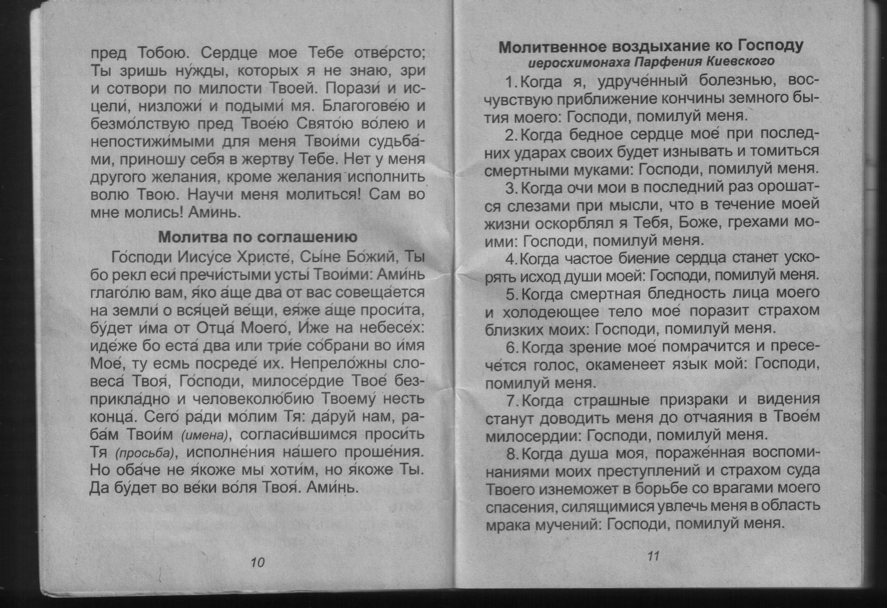
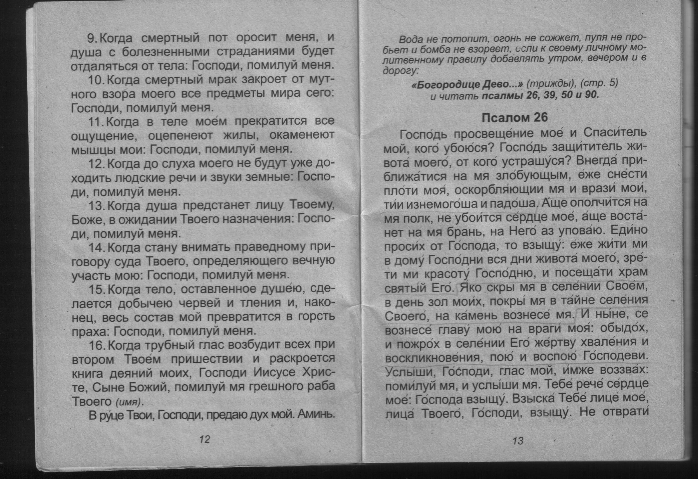
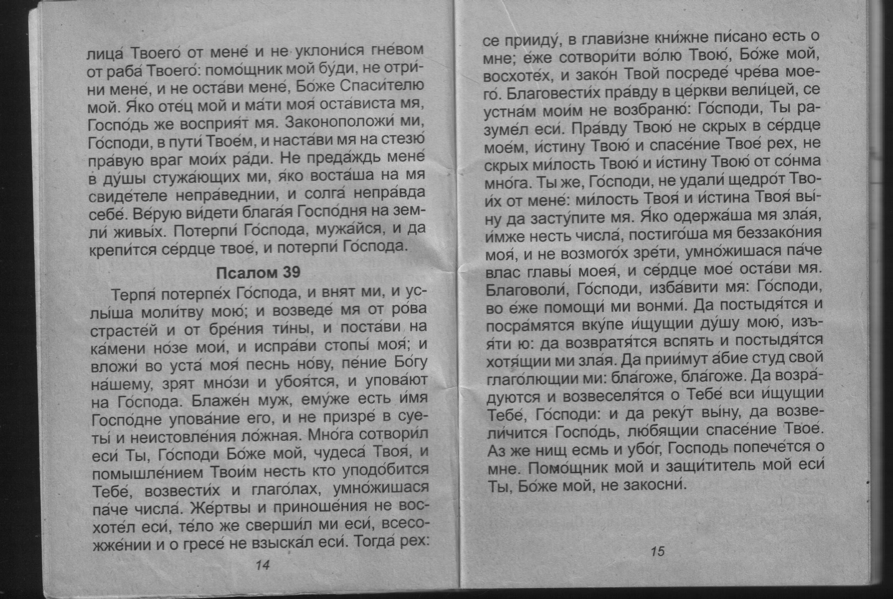
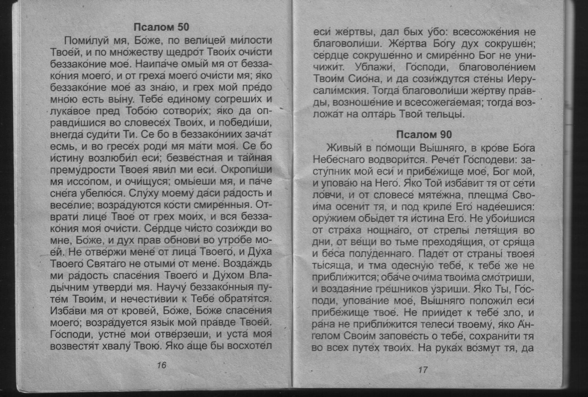
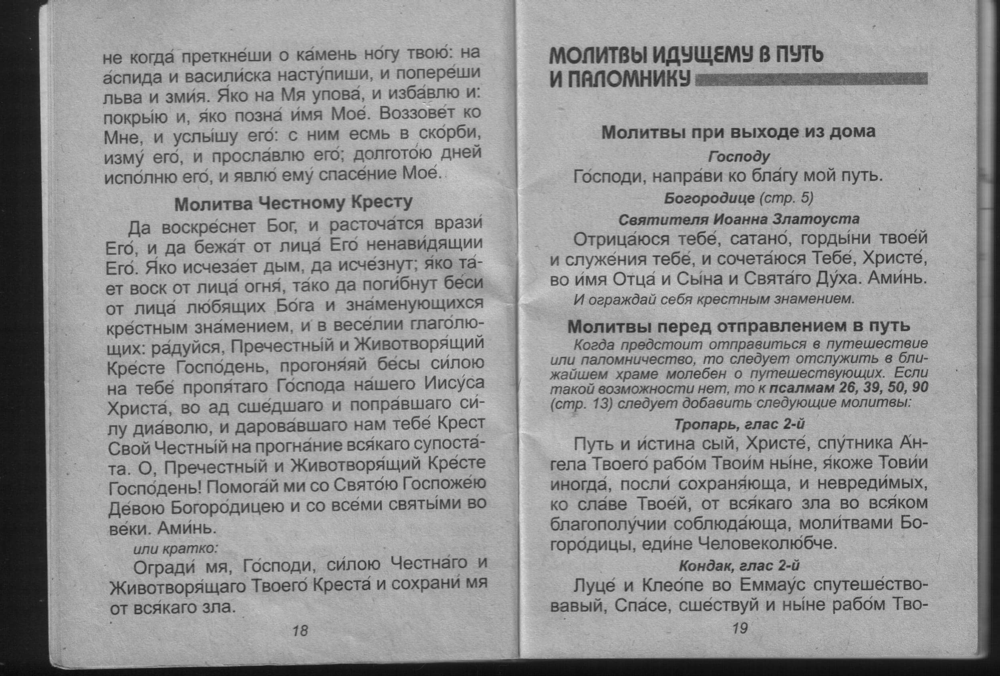
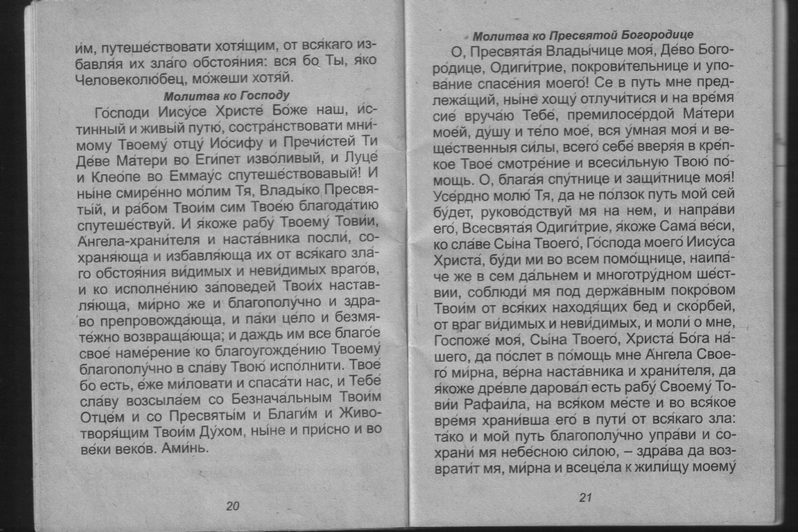

     
МОЛИТВЫ В ТЕЧЕНИЕ ДНЯ
Поучения о молитве преподобного Иоанна Лествичника
Молитва о даровании молитвы
Молитва человека, страдающего рассеянием, невниманием,нерадением на молитве
Молитва Святому Духу
Трисвятое upppp
Молитва ко Пресвятой Троице
Молитва Господня
Песнь Пресвятой Богородице
Молитвенное призывание святого, имя которого носишь
Молитвы перед началом всякого дела
Молитвы по окончании всякого дела
Молитва на освящение всякой вещи
Молитва о даровании разумения свт. Иоанна Златоуста
Молитва при чтении Евангелия
Вопль к Богородице
Молитва свт. Димитрия Ростовского
Ежедневная молитва свт. Филарета Московского
Молитва по соглашению
Молитвенное воздыхание ко Господу иеросхимонаха Парфения Киевского downnnn
Псалом 26
Псалом 39
Псалом 50
Псалом 90
Молитва Честному Кресту
МОЛИТВЫ ИДУЩЕМУ В ПУТЬ И ПАЛОМНИКУ
Молитвы при выходе из дома
Господу
Святителя Иоанна Златоуста
Молитвы перед отправлением в путь
Тропарь
Кондак
Молитва ко Господу
Молитва ко Пресвятой Богородице
Святителю и чудотворцу Николаю
Молитва водителя
Молитва перед отправлением в плавание
Молитва о безопасном путешествии по водам преподобному Варлааму Керетскому
Молитва перед отправлением в воздушное путешествие
МОЛИТВЫ О ПОМОЩИ В СЕМЕЙНЫХ НУЖДАХ, О ЗАЩИТЕ ДЕТЕЙ
Молитва о совете и любви между мужем и женой святому апостолу Иоанну Богослову
Молитва в опасении насилия девственности и целомудрия мученице Фомаиде Египетской
Молитва, чтобы муж благополучно вернулся из дальней поездки Сорока мученикам, в Севастийском озере мучившимся
Ежедневные молитвы о чадах
Молитва о заступничестве вдовицам и сиротам, о помощи в бедности и нужде праведному Филарету Милостивому
Молитвы когда от детей нет известий
Прп. Ксенофонту и супруге его Марии
Ангелу-Хранителю
Молитвы от воздействия на детей злых духов
МОЛИТВЫ О ЗАЩИТЕ В ТЯЖЕЛЫХ БОЛЕЗНЯХ
Молитва о болящих ко Господу
Молитва св. великомученику и целителю Пантелеймону
Молитва при умалишении блаженному Андрею, Христа ради юродивому
Молитвы об исцелении от пьянства и наркомании
Перед иконой Божией Матери «Неупиваемая Чаша»
Молитва мученику Вонифатию
Молитва св. Вонифатию Милостивому
Молитва от пьянства святого Иоанна Кронштадтского
Молитва от пьянства и всякой страсти
Молитвы при злокачественных опухолях перед иконой Божией Матери «Всецарица»
Тропарь
Молитва
Молитва об исцелении от порчи пророку Малахии
Молитва о больном, которому нет надежды на выздоровление прп. Афанасию Афонскому
ПРИЗЫВАНИЕ ПОМОЩИ БОЖИЕЙ В ЖИТЕЙСКИХ НУЖДАХ
Молитва перед принятием пищи
Молитва после вкушения пищи
Молитва на вхождение в новый дом
Молитва при открытии работ (на предприятиях, в мастерских и т.д.) свт. Василию Великому
Молитва об укрощении гнева в человеке (начальнике)
Молитвы о покровительстве в торговле великомученику Иоанну Новому, Сочавскому
Тропарь
Кондак
Молитва при нападении грабителей святому прав. Иосифу, обручнику Пресвятыя Девы Марии
Молитва от обидчика, а также об отыскании украденного и от вора мученику Иоанну Воину
Молитвы от нападения собак
Молитва, если кто непослушлив преподобного Силуана Афонского
Молитвы о заблудших
Господу
Божией Матери сет. Гавриила Новгородского
МОЛИТВЫ О ЗАЩИТЕ ПРИ ВОЙНАХ И НАПАДЕНИЯХ
Молитва Господу против супостатов
Молитвы перед сражением
О покровительстве православных воинов и армии великомученику Георгию Победоносцу
Тропарь
Тропарь
Молитвы во время бедствий и нападений врагов
Тропарь
Кондак
Молитва об избавлении от смерти без исповеди и Святого Причастия вмц. Варваре
Молитва в плену у врагов преподобному Петру Афонскому
Молитва в ранах и страданиях мученика Евтропия-воина
Молитва о прекращении войн и прочего зла в мире, которую митрополит Вениамин (Федченков) встретил в народном обиходе
МОЛИТВЫ О ЗАЩИТЕ ПРИ СТИХИЙНЫХ БЕДСТВИЯХ
Молитвы на море от бури и потопленеия
Перед иконой Пресвятой Богородицы Пеньков¬ской, именуемой «Спасительница утопающих»
Молитва святителю Николаю Чудотворцу
Молитва о сохранении от пожара перед иконой Божией Матери «Неопалимая Купина»
Молитва от землетрясения
Молитва во время грозы
Молитва пророку Божию Илии о защищении от голода
Молитва об избавлении от эпидемий перед иконой Божией Матери «Споручница грешных»
МОЛИТВЫ ПРИ ИСКУШЕНИЯХ И СКОРБЯХ
Молитва во время искушений
Молитва прп. Симеона Нового Богослова
Молитвы об умножении любви и искоренении ненависти и всякой злобы
Тропарь
Кондак
Молитвы ко Господу о прощении, заступлении и помощи
Молитва 1-я
Молитва 2-я
Молитва преследуемого человеками свт. Игнатия Брянчанинова
Молитва о примирении враждующих
Молитвы о ненавидящих и обидящих нас
Тропарь
Кондак
Молитва о умиротворении враждующих и об умягчении злых сердец перед иконой Божией Матери «Умягчение злых сердец»
Молитва вмч. Георгию Победоносцу
Молитва при оклеветании свт. Василию Рязанскому
Молитва за клеветников и обидчиков
Молитва против гонителей и презрителей веры
Молитвы о заключенных
Тропарь
Кондак
Молитва
Молитва о даровании терпения
Молитва в недоумении как поступать
Молитва об отпущении грехов юности
Молитва о прощении забытых грехов прп. Варсонофия Великого
Молитва, когда согрешишь или ошибешься
Молитва свт. Иоасафа Белгородского на каждый час
Молитва свт. Василия Великого
Молитвы в грусти и унынии
Молитва в отчаянии
Молитвы от скоропостижной смерти
МОЛИТВЫ О БЛИЖНИХ СВ. ИОАННА КРОНШТАДТСКОГО
О гордом и строптивом
О злобном
О сребролюбивом и жадном
О завистливом
О пьянице
О чревоугоднике
МОЛИТВЫ НА БРАНЬ БЛУДА
Псалом 3
Молитва, когда бывают нечистые помыслы и желание грешить или уныние, отчаяние, тоска
Молитва об избавлении от нечистых помышлений
Молитвы на брань блуда
Господу
Пресвятой Богородице
Молитва на злые мысли
Молитвы св. праведного Иоанна Кронштадтского
Молитва 1-я
Молитва 2-я
Молитва к Божией Матери
Молитва от осквернения свт. Василия Великого
КРАТЧАЙШИЙ ОБРАЗ ИЗБАВЛЕНИЯ ОТ ХУЛЬНЫХ МЫСЛЕЙ
МОЛИТВЫ НА ОТГНАНИЕ ЗЛЫХ ДУХОВ И О СОХРАНЕНИИ ОТ ДИАВОЛА
Три молитвы, приносимые с началом дня
Молитва 1-я
Молитва 2-я
Молитва 3-я
Молитва прп. Нектария Оптинского
Молитвы о защите от нечистой силы
Гэсподу
Мученику Трифону
Молитва об избавлении от беснования прп. Лаврентию Туровскому
Молитвы для защиты от колдунов и чародеев
Стих из псалма 79
Молитвы священномученику Киприану
Молитва против демонских козней
Молитва о доме, докучаемом злыми духами
БЛАГОДАРЕНИЕ ЗА ВСЯКОЕ БЛАГОДЕЯНИЕ БОЖИЕ
Тропарь
Кондак
Богородичен
Песнь хвалебная св. Амвросия, епископа Медиоланского
Благодарственная молитва из акафиста «Слава Богу за все» митрополита Трифона (Туркестанова)
Окончание молитв
Конечная молитва